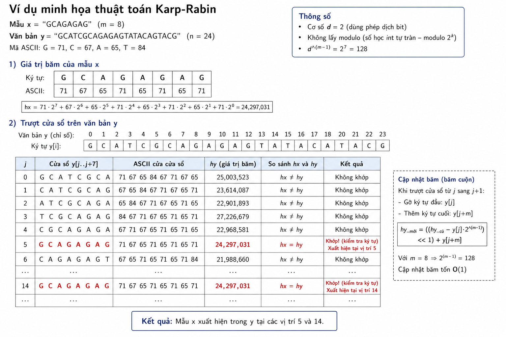

Thay vì so sánh trực tiếp từng ký tự tại mỗi vị trí cửa sổ, Karp-Rabin biến việc so sánh chuỗi thành việc so sánh số. Ta dùng một hàm băm ánh xạ mỗi chuỗi độ dài m sang một số nguyên. Nếu giá trị băm của mẫu và của cửa sổ hiện tại khác nhau thì chắc chắn chúng là hai chuỗi khác nhau, ta bỏ qua ngay mà không cần so sánh ký tự. Chỉ khi hai giá trị băm bằng nhau, ta mới kiểm tra lại từng ký tự để xác nhận (vì hai chuỗi khác nhau vẫn có thể tình cờ cùng giá trị băm — gọi là va chạm).
Mấu chốt để thuật toán nhanh là hàm băm phải cho phép tính giá trị của cửa sổ tiếp theo từ cửa sổ hiện tại trong thời gian hằng số, thay vì tính lại từ đầu. Đây chính là kỹ thuật băm cuộn.
Coi mỗi ký tự như một chữ số trong hệ cơ số d (thường lấy $d = 2$ để nhân bằng phép dịch bit, hoặc d bằng kích thước bảng chữ cái). Giá trị băm của chuỗi $y[j \,..\, j+m-1]$ được định nghĩa theo kiểu đa thức:
$$\text{hash} = y[j] \cdot d^{m-1} + y[j+1] \cdot d^{m-2} + \cdots + y[j+m-1] \cdot d^0$$
thường được lấy dư theo một số nguyên tố lớn q để tránh tràn số.
Khi trượt cửa sổ từ vị trí j sang $j+1$, ta cần gỡ ký tự y[j] ở đầu và thêm ký tự y[j+m] ở cuối:
$$\text{hash\_moi} = (\text{hash\_cu} - y[j] \cdot d^{m-1}) \cdot d + y[j+m]$$
Phép cập nhật này chỉ gồm vài phép nhân, trừ, cộng, nên tốn $O(1)$. Hằng số $d^{m-1}$ được tính sẵn trong pha tiền xử lý.
Thuật toán tính giá trị băm hx của mẫu và hy của cửa sổ đầu tiên, rồi trượt cửa sổ dọc văn bản. Tại mỗi vị trí, nếu $\text{hx} = \text{hy}$ thì kiểm tra lại toàn bộ ký tự để loại trừ va chạm; nếu khớp thật thì báo xuất hiện. Với hàm băm phân bố tốt, số va chạm rất ít nên tổng thời gian kỳ vọng là $O(n + m)$.
#include <stdio.h>
#include <string.h>
/* Dùng cơ số 2 (phép dịch bit); băm theo số học modulo tự nhiên của int.
REHASH: gỡ ký tự a ở đầu, thêm ký tự b ở cuối, d = 2^(m-1). */
#define REHASH(a, b, h, d) (((h) - (a) * (d)) << 1) + (b)
void search(char *x, int m, char *y, int n) {
int hx, hy, i, j, d;
/* Tiền xử lý: d = 2^(m-1), tính băm của mẫu và cửa sổ đầu tiên */
d = 1;
for (i = 1; i < m; i++)
d = (d << 1); /* d = 2^(m-1) */
hx = hy = 0;
for (i = 0; i < m; i++) {
hx = ((hx << 1) + x[i]);
hy = ((hy << 1) + y[i]);
}
/* Pha tìm kiếm */
j = 0;
while (j <= n - m) {
if (hx == hy && memcmp(x, y + j, m) == 0)
printf("Tim thay tai vi tri %d\n", j);
/* Trượt cửa sổ: cập nhật băm trong O(1) */
if (j < n - m)
hy = REHASH((int)y[j], (int)y[j + m], hy, d);
j++;
}
}Ở đây phép so sánh xác nhận dùng memcmp để đối chiếu m ký tự khi hai băm trùng nhau. Kỹ thuật băm dùng cơ số 2 và để số học int tự tràn (một dạng modulo $2^k$) giúp cài đặt gọn.
Xét mẫu x = "GCAGAGAG" ($m = 8$) trên y = "GCATCGCAGAGAGTATACAGTACG". Giả sử mã ASCII: $G=71, C=67, A=65, T=84$.

Tính hx = giá trị băm của "GCAGAGAG" và hy = giá trị băm của cửa sổ đầu tiên "GCATCGCA". Hai giá trị này khác nhau (vì hai chuỗi khác nhau), nên tại $j = 0$ ta bỏ qua mà không so sánh ký tự.
Trượt cửa sổ: gỡ $y[0]='G'$, thêm $y[8]='A'$, cập nhật hy cho cửa sổ "CATCGCAG" chỉ bằng công thức REHASH — một phép trừ, một phép dịch, một phép cộng. So hx với hy mới; vẫn khác nhau, bỏ qua.
Cứ thế trượt tiếp. Khi cửa sổ đến vị trí $j = 5$, ứng với đoạn y[5..12] = "GCAGAGAG", giá trị hy sẽ bằng hx. Lúc này thuật toán kiểm tra lại 8 ký tự bằng memcmp, thấy khớp hoàn toàn, và báo xuất hiện tại vị trí 5.
Điểm đáng chú ý: tại các vị trí $j = 0, 1, 2, \dots$ trước đó, ta gần như không tốn phép so sánh ký tự nào — toàn bộ công việc chỉ là so sánh hai số nguyên. Đây chính là nguồn gốc hiệu quả của Karp-Rabin.